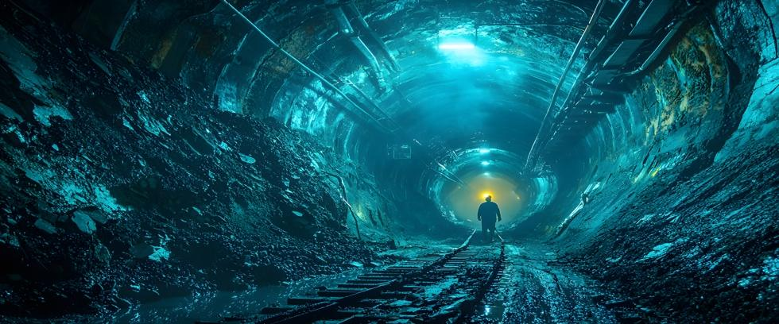

There is a hard truth to face: Worldwide carbon emissions continue to grow despite efforts to reduce them. Modern society is dependent on fossil fuels, which are energy-dense, abundant, and cheap. Anything capable of replacing them must possess those same qualities, and it’s truly unfortunate that renewables do not.
Nuclear power is also one of the cleanest energy sources available, but it comes with political baggage, and the focus to date has been on uranium technology. For eight decades, element 92 has been at the center of nuclear power and nuclear weapons programs. Yet thorium — element 90 on the periodic table — has some desirable qualities that uranium does not.
Thorium is not a cure-all for every nuclear issue, but compared to uranium its benefits are so remarkable that some people wonder why it is not used in all nuclear power plants.
The reasons are complex, including the significant head start that uranium technology enjoyed, a presidential payback to political donors in the 1960s, and a great deal of money.
What is Thorium?
Thorium is a silver-colored, slightly radioactive metal similar to uranium, but much more abundant. Enough mineable thorium exists in the ground to power our civilization for more than 10,000 years at current rates of consumption.
Although thorium is similar to uranium, it differs in several important ways. Both elements can produce energy when irradiated in reactors, but irradiating thorium also creates uranium-233, while irradiating uranium produces plutonium. Modern thermonuclear warheads use plutonium in their primary pit, but U233 is not well-suited for weapons.
Weapons-Free Energy
To build a bomb from thorium fuel would require extracting the fissile U233 that the reactor produced, much like plutonium is extracted from irradiated uranium fuel. But U233 emits so much deadly gamma radiation that it’s difficult to handle, while weapons-grade plutonium is relatively safe to be around.
The deadly radiation emitted by U233 is a natural barrier to weaponization that plutonium does not share. A U233 bomb would require thick radiation shielding to protect personnel until the weapon was finally used – a heavy radiation barrier that might weigh more than the warhead itself. The additional payload would severely limit missile range, while strong radiation in close proximity can also damage critical electronic circuits.
Compare that to the uranium-powered reactors that produced plutonium for nuclear warheads that required no shielding. Every gram of weapon-grade plutonium exists because a nuclear reactor somewhere irradiated uranium to produce it.
Thorium reactors could provide the same energy without supporting the world’s most destructive technology in the process.
Waste Not
Current uranium reactors produce dangerous radioactive waste, some of which remains deadly for tens of thousands of years. But waste from thorium Molten Salt Reactors (MSR) loses most of its radiation in a few hundred years. The nuclear waste problem is not solved entirely, but it is dramatically reduced.
The volume of waste is also significantly reduced. Modern uranium reactors only use about 3% of the energy contained in their fuel load, but MSRs burn nearly 99% of the energy in their fuel.
A major bonus is how MSRs can consume the problematic radioactive waste stored at nuclear sites worldwide. General Atomics estimates that spent reactor fuel in America alone contains more usable energy than 9 trillion barrels of oil – more than the world’s oil reserves combined!
Instead of viewing nuclear waste as a valuable clean energy commodity, we ponder expensive geological repositories and complex procedures to dispose of it. But aging uranium reactors could be shut down and replaced with factory-built, modular MSRs that transformed waste stored onsite into clean energy with no transportation required.
Rather than a growing problem we struggle to solve, unwanted waste becomes a carbon-free treasure!
Had the world built thorium MSRs instead of uranium reactors, a 300-year sequestration for 500 tons of waste would now be required, rather than 50,000 tons that will need to be isolated for at least 10,000 years!
MSRs can also operate as “breeder reactors,” meaning they produce more fissile material than they consume. After initially “priming” the reaction with enriched uranium, a fresh supply of thorium is all that’s required to operate. Unlike uranium, no conversion or enrichment plants are necessary.
Safety by Design
MSRs operate at much lower pressures than standard reactors. With materials stressed by pressure in excess of 2,000 psi, modern uranium reactors make failures more likely as metal fatigue grows with time.
And some MSR designs incorporate passive safety features that automatically terminate the reaction if something goes wrong. An example would be a hole drilled in the bottom of the reactor core with a plug installed that melts at a certain temperature. This works because, unlike solid uranium dioxide pellets found in standard reactors, MSR fuel is a liquid molten salt.
A meltdown is impossible since molten salts are already liquid. But as a last resort, excessive heat melts the plug, and the liquid core drains down into a catch basin shaped in a non-critical configuration. The reaction dies instantly by physical laws of nature rather than complex engineered safety devices that can fail.
A Market-Based Solution
Climate change issues seem largely focused on reducing greenhouse gas emissions in America and Europe. Yet China contributes nearly 30% of worldwide emissions compared to America’s 11%, and 8% for India. Perhaps 3 billion people in developing countries add to the problem by cooking and heating their homes with wood or other forms of biomass.
Energy expert Dr. Robert Hargraves estimates that factory-built modular MSRs could be shipped worldwide and generate electricity for 3-4 cents per kilowatt hour. Developing countries strapped for cash will not pay more for renewables if cheap fossil fuels are available. But they will pay less.
As Dr. Hargreaves points out, thorium offers an untapped source of clean energy that’s cheaper than coal.
When Politics Trumped Physics
If thorium has so many advantages, why do we still use uranium?
The answer lies mostly in history. Uranium reactors were built to produce plutonium for atomic bombs during WWII. Many scientists thought thorium reactors were possible at the time, but the arms race was accelerating, and thorium reactors could not produce plutonium for nuclear weapons.
Yet in the 1960s, the Molten Salt Reactor Experiment was conducted at Oak Ridge National Laboratory in Tennessee. It was a major success, but uranium reactors had spread around the world by then.
Yet so impressive was thorium’s performance that the scientists and engineers who conducted the experiment were certain that uranium reactors would soon be obsolete.
It was not to be.
Trillions of dollars were invested worldwide in uranium technology. Powerful people would lose fortunes if their investments became obsolete. Some of those people thought fast breeder reactors were the wave of the future. Some were also associates of, and political donors to, President Richard Nixon.
In 1973, despite the success of the program, funds for the Molten Salt Reactor Experiment were cut by the Nixon Administration. The program’s administrator was fired by the president and its funding diverted to fast breeder research instead.
This was partially justified by how the experiment revealed problems with hot molten salts corroding metals in the presence of radiation. But no effort was made to develop corrosion-resistant materials like those in existence today. The experiment was eventually terminated, and enriched uranium still produces weapons-grade plutonium in nuclear reactors around the world.
What a shame.
The Path Forward
At Our Planet Project Foundation, we believe that nuclear weapons can be eliminated without sacrificing nuclear power. But doing so is much easier if we switch from weapons-friendly uranium to proliferation-resistant thorium.
In a nuclear disarmament program, obtaining nuclear energy from thorium instead of uranium would eliminate new plutonium production so attention could focus on eliminating existing plutonium as well. As the wise one said: It all counts.